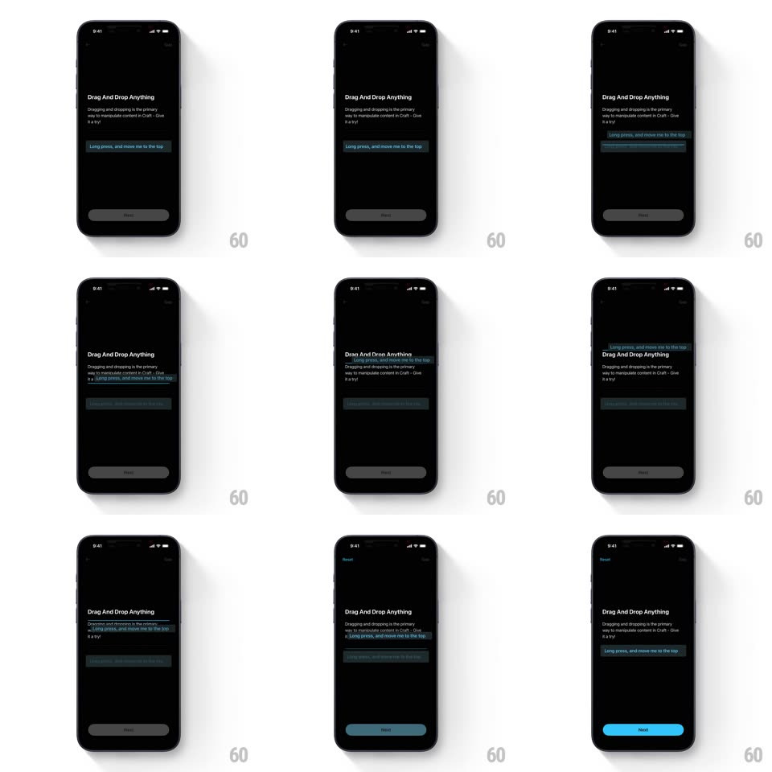

Media
Frame-by-frame

Rebuild this interaction 1:1: Craft's "Drag And Drop Anything" coachmark - long-press the highlighted block, drag it above the title, and drop it to reorder, unlocking the Next button.

Rebuild this interaction 1:1: Craft's "Drag And Drop Anything" coachmark - long-press the highlighted block, drag it above the title, and drop it to reorder, unlocking the Next button.
## Integration
Integration: stack-agnostic spec - springs given as stiffness/damping, timed motions as duration + curve; map every value to your framework and animation library of choice.
## Scene
Craft onboarding page, black: the "Drag And Drop Anything" title with the line "Dragging and dropping is the primary way to manipulate content in Craft - Give it a try!", a teal-highlighted block reading "Long press, and move me to the top", and a bottom button that starts gray ("Next", disabled) and turns blue when the task completes.
## Motion spec
Pattern: long-press lift, drag, and drop reorder of a content block.
- The block's teal highlight pulses gently (1.2s loop) until touched.
- On long-press (~400ms hold), the block lifts: scale 1 -> 1.04 with a soft shadow bloom and a 6px rise (200ms, spring ~350/18) - the surrounding content stays put.
- While dragging, the block tracks the finger 1:1; the gap it would occupy renders as a dim placeholder strip that slides open between neighbors (150ms) as the finger crosses each boundary.
- On release over a valid slot, the block snaps in (spring ~320/20, ~250ms) and the placeholder closes around it; over an invalid area it flies back to its origin (300ms, spring ~300/18).
- When the block lands at the top slot, its coachmark text becomes normal content (200ms), and the Next button fills blue and brightens (250ms) - the only state change outside the block.
## Calibration
- The lift is subtle - 4% scale and shadow, not a balloon. The block must still read as the same text.
- The placeholder is a real layout gap: neighbors reflow around it during the drag, never overlap.
## Reduced motion
Long-press lifts without shadow bloom; drop snaps without spring overshoot.
## Don't miss
- The instruction text lives inside the draggable block - completing the task retires the instruction.
- Next stays visibly disabled (gray) until the drop completes - the affordance is the lesson's reward.